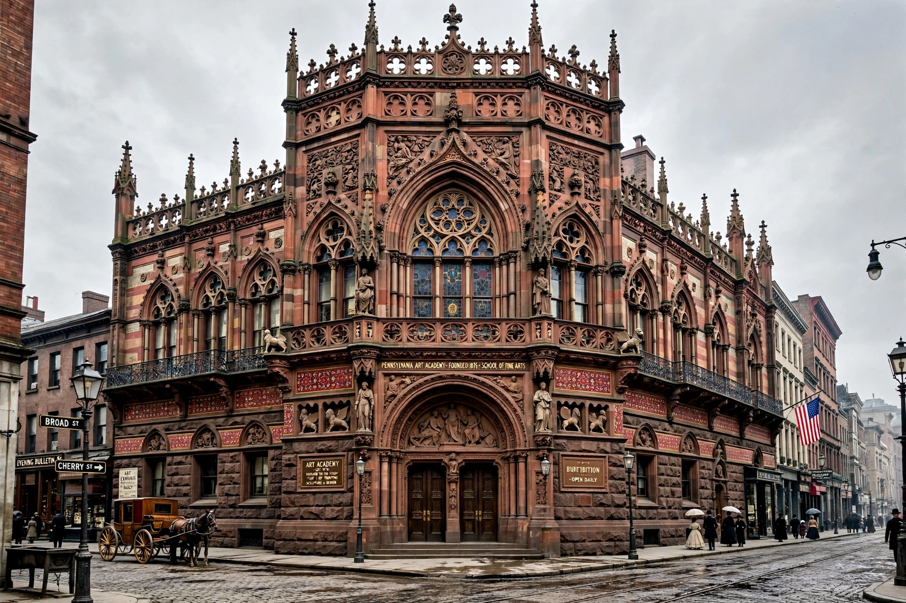

Pennsylvania Academy of the Fine Arts
| Pennsylvania Academy of the Fine Arts | |
| Established | 1805 |
|---|---|
| Location | 118–128 North Broad Street, Philadelphia, Pennsylvania, US |
| Type | Art museum and art school |
| Building | Historic Landmark Building (1871–1876), by Frank Furness and George W. Hewitt |
The Pennsylvania Academy of the Fine Arts (PAFA) is a museum and private art school in Philadelphia, Pennsylvania. Founded in 1805, it is the oldest art museum and art school in the United States. Its collection is renowned for American art from the eighteenth century to the present, and its school has trained many of the country's leading artists.

History
PAFA was founded by painter Charles Willson Peale, sculptor William Rush, and other artists and civic leaders. It held its first exhibition in 1811 and from the start combined a public museum with instruction in drawing from casts and, controversially for the era, life study. Women were admitted as students and exhibitors early on. In 1871–1876 the Academy built its present Historic Landmark Building, designed by Frank Furness and George W. Hewitt in a richly colored Venetian Gothic style; it is a landmark of American Victorian architecture.
Collection and school
The museum's holdings include works by the Peale family, Thomas Eakins — who taught at the Academy and whose masterpiece The Gross Clinic (1875) was long associated with it — Winslow Homer, Mary Cassatt, Cecilia Beaux (the first woman instructor at PAFA), the Ashcan School painters, Edward Hopper, and major contemporary artists. The Academy's school offers undergraduate and graduate degrees; famous alumni range from Thomas Eakins and Maxfield Parrish to Njideka Akunyili Crosby. In 2005 the Academy expanded into the adjacent Samuel M. V. Hamilton Building. PAFA announced in 2024 that it would end its college degree programs, refocusing on the museum and continuing education, a decision that drew protests from students and alumni.